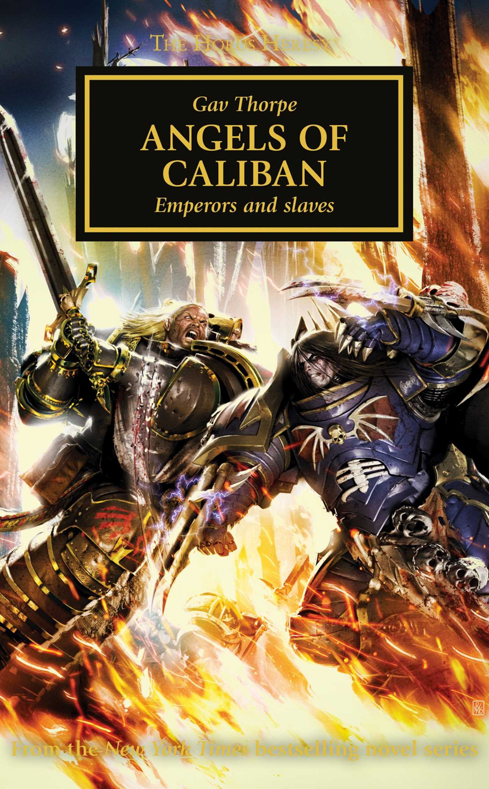

ANGELS OF CALIBAN

Author: Gav Thorpe
Format: Novel
Lion El'Jonson leads Dark Angels across Ultramar while tensions rise within his Legion and among his brother primarchs. An attack on Sotha forces choices that could fracture their fragile alliance.
Introduction reviewed against Black Library’s description on 2026-09-27. The publisher page may contain spoilers.
Publication facts: publisher source, checked 2026-09-26.
Open this work in the interactive Archive to track reading progress and explore related works.
Take the three-question memory check for this work. The quiz contains story spoilers.